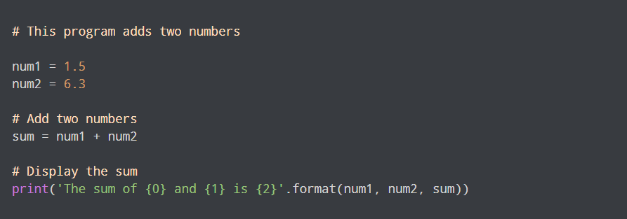
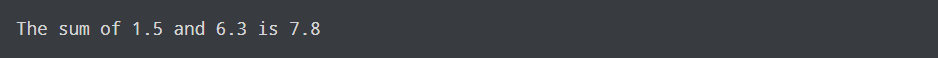

Python Program to Add Two Numbers
Code:

Output:

Python is a widely used general-purpose, high level programming language. It was created by Guido van Rossum in 1991 and further developed by the Python Software Foundation. It was designed with an emphasis on code readability, and its syntax allows programmers to express their concepts in fewer lines of code.
Code:
Output: